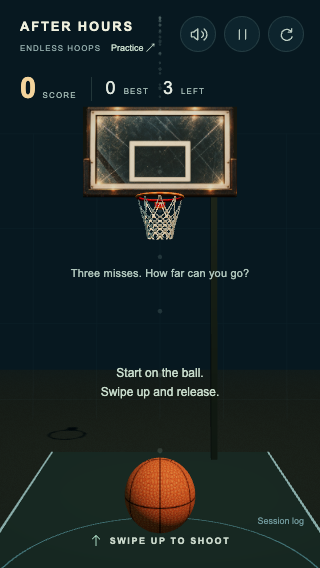
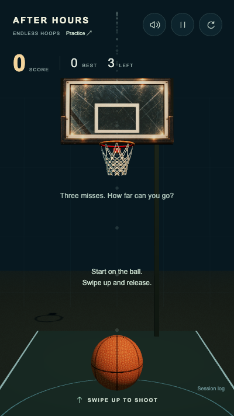
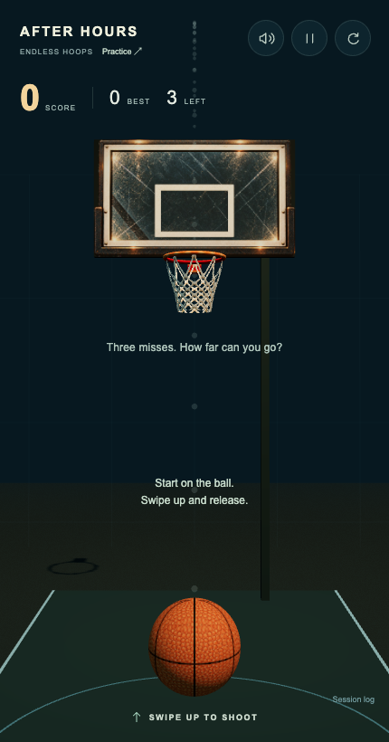
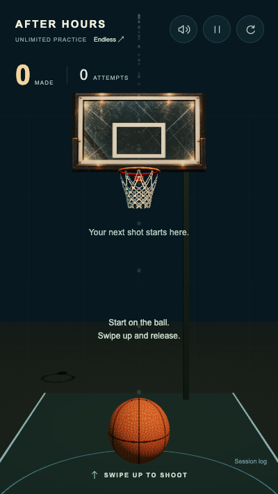
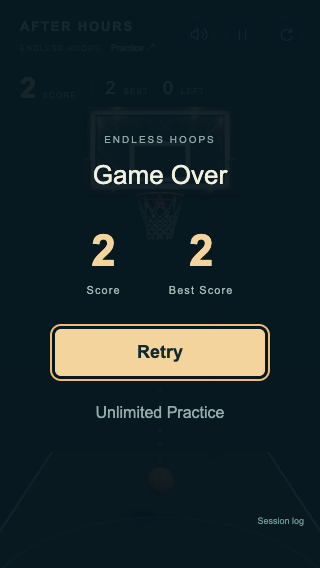
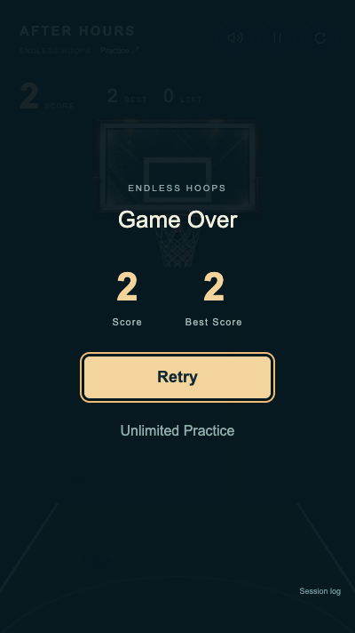
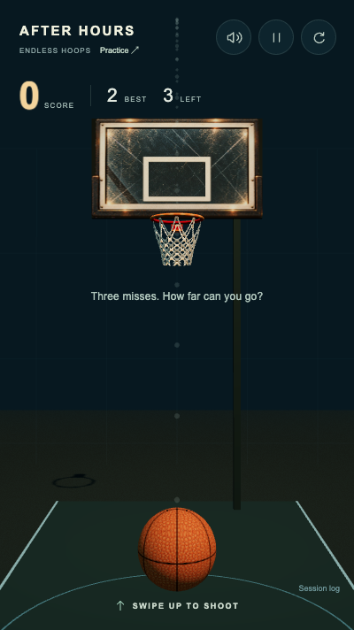

Play Endless · Unlimited Practice · Report and browser instructions
Confirmed baskets +1. Three resolved misses end the run. Best persists locally. Retry starts a fresh run immediately. Current shooting, physics, artwork, net and audio are retained.
Native touch: two baskets → three misses → Game Over → Retry → another basket. No game state or scores injected. This is automated chosen input, not a human playtest or phone FPS measurement.
Physical and run trace · Captured source manifest · Browser results







Physical iPhone/Android performance and how motivating the short loop feels still need human play. No new gameplay mechanics are included beyond this MVP.